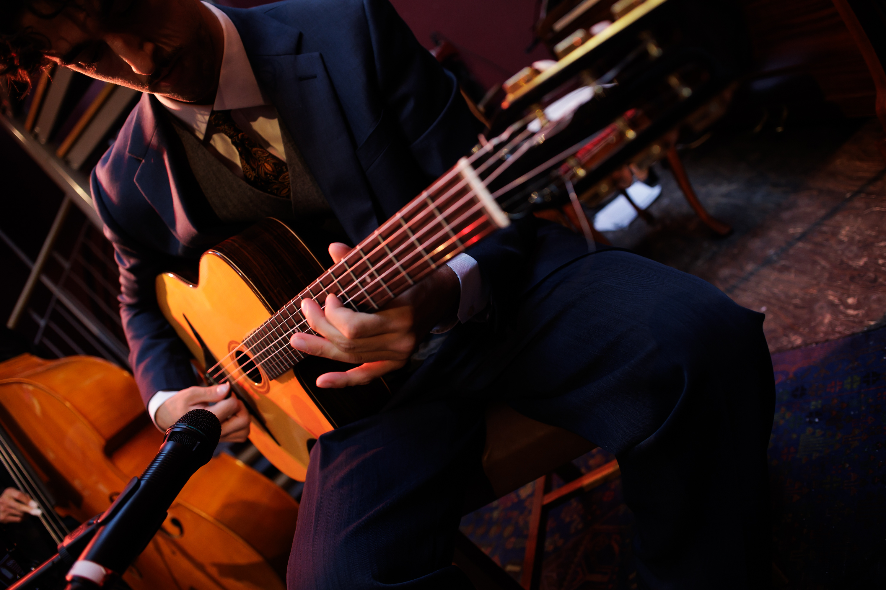
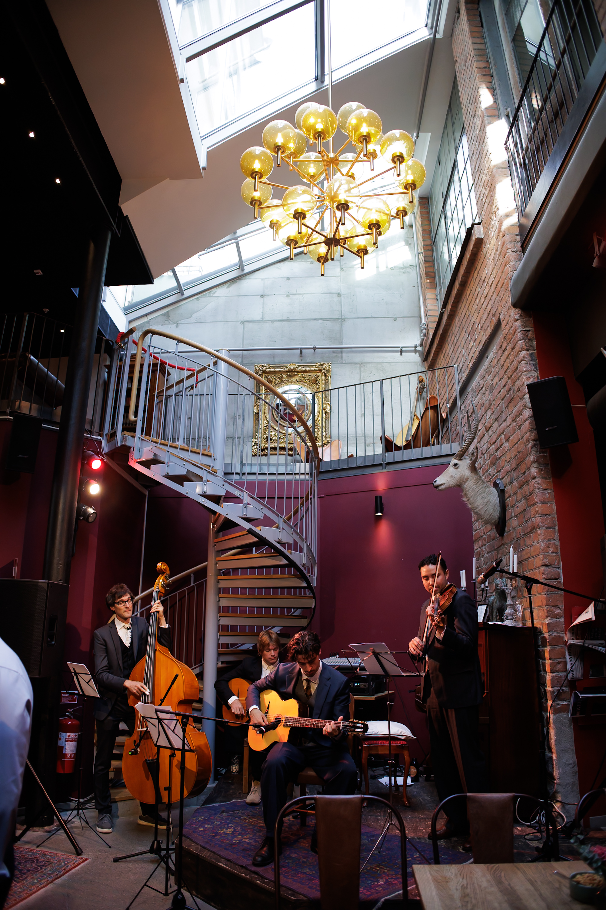
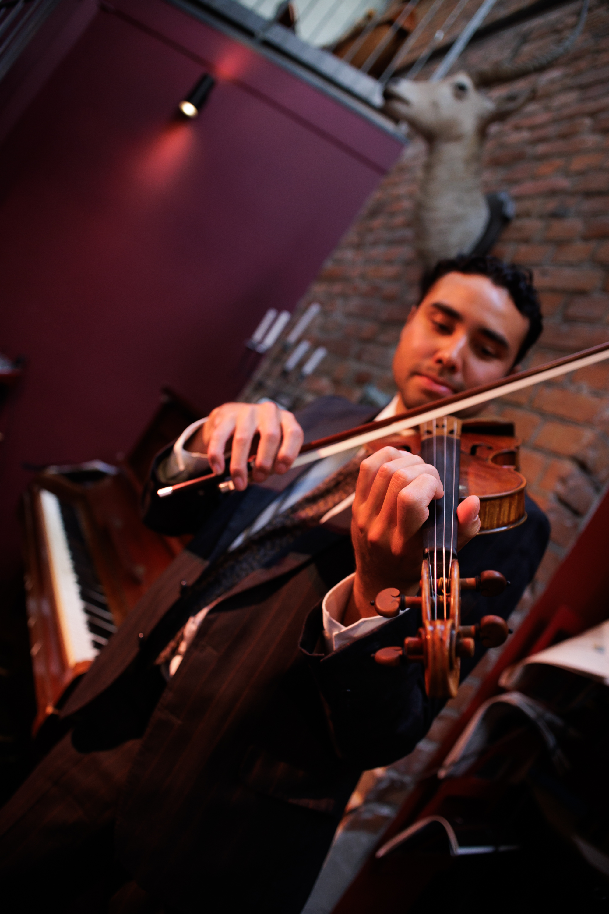
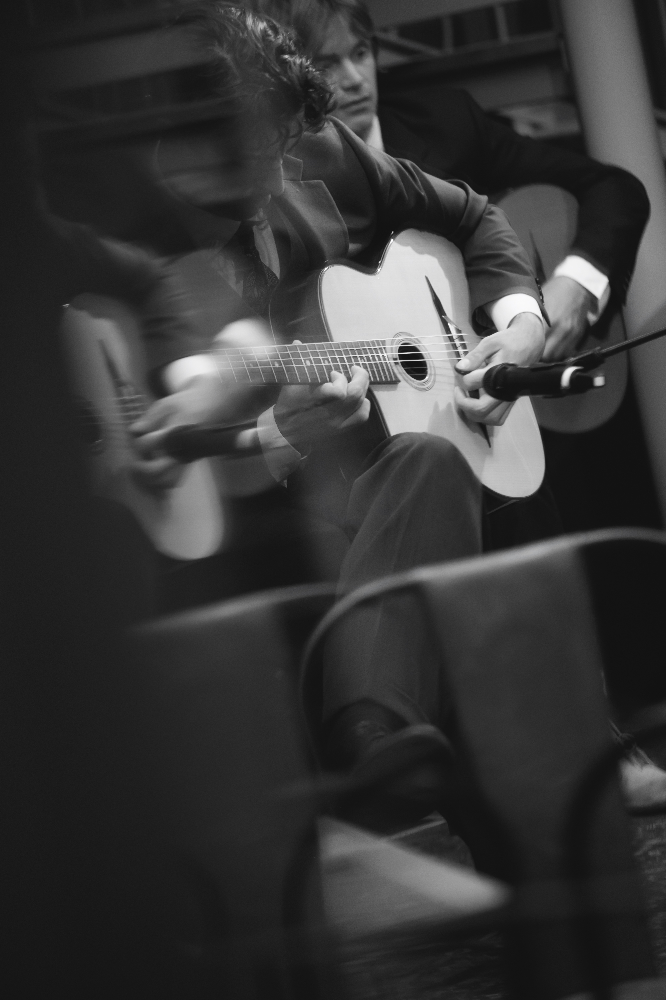

The Django Quartet grundades 2026 i Stockholm av fyra musiker med en gemensam förkärlek för manouche-jazz i den tradition som Django Reinhardt och Stéphane Grappelli etablerade i Quintette du Hot Club de France. Besättningen består av sologitarr, kompgitarr, fiol och kontrabas — helt akustiskt, utan trummor eller förstärkare, på samma sätt som förebilderna spelade på 1930-talet.
Vi anlitas för allt ifrån privata fester och mingel, där musiken ska skapa en stämning utan att ta över samtalet, till klubbar och restauranger där publiken kommer för att lyssna. Repertoaren anpassas efter tillfället: samma arrangemang fungerar lika bra som diskret bakgrundsmusik under en middag som i ett konsertrum med full uppmärksamhet.
Instrumenten är valda med samma omsorg som musiken: gitarrer i Selmer-Maccaferri-stil, samma modell Django själv spelade, fiolen svävande i höjden och kontrabasen i djupet. Tillsammans ger de en klang som känns igen från 1930-talets Paris — varm, akustisk och utan en enda kabel i vägen.


Repertoar
Ur Programmet
Ett urval ur vår repertoar. Vill ni ha ett skräddarsytt program — en särskild blandning av tempo, stämning eller specifika låtar — sätter vi gärna ihop det inför ert evenemang.
Låtar i Urval
Django-låtar, kända melodier, chansons och standards- Minor SwingReinhardt & Grappelli
- Sweet Georgia BrownBernie / Pinkard / Casey
- Sakta vi gå genom stanAhlert / Turk, sv. text Wolgers
- Si Tu Vois Ma MèreDjango Reinhardt
- La Vie en RosePiaf / Louiguy
- It Don't Mean a Thing (If It Ain't Got That Swing)Duke Ellington
- Night and DayCole Porter
- Mr. SandmanThe Chordettes
- Beyond the Sea (La Mer)Charles Trenet
- I'm Confessin'Dougherty / Reynolds / Neiburg
- J'attendraiDino Olivieri
Lyssna på Kvartetten
Mediegalleri
Fler bilder och videos finns på vår instagram.


Kalender
Spelningar
Tid och plats för tidigare och kommande spelningar.
| Datum | Lokal | |
|---|---|---|
| 19 september 2026 | Scalateatern, Stockholm | Privat Spelning |
| 26 juli 2026 | Hellstens Glashus, Stockholm | Mingelmusik |
Stötta Oss
Ge ett Bidrag
Tycker ni om det ni hör under spelningen? Ett bidrag går direkt till musikerna.
Skanna för att swisha ett bidrag
eller swisha till 073-322 39 19

Hör av Er
Kontakt & Bokning
Tillgängliga för privata fester, mingelmusik och bakgrundsmusik, klubbar samt restauranger.
Berätta datum, lokal och speltid — så skickar vi ett program som passar.